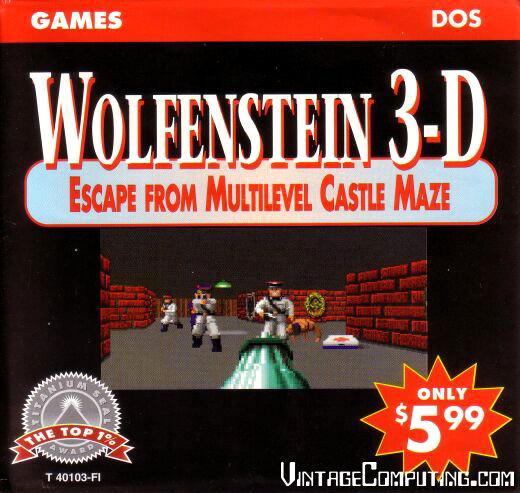

Everything I know about games I learned from the 90s
-
Why the 90s? New millineum not extreme enough?!
-
A system fraught with limits
-
Magick, lore, wisdom
-
Casting some spells
-
Oddities - you can't do this with that!
-
Magicians, scientists, explorers
Why the 90s? New millineum not extreme enough?!
stretching limits / exploring boundaries
3d is the future, but is it? It's fun / challenging, so let's try it!
Shareware - a new distribution model 
A system fraught with limits
Magick, lore, wisdom
Casting some spells
Dost thou even code brother?
Oddities - you can't do this with that!
Magicians, scientists, explorers
Magicians are actually scientists
Children are scientists cause they don't know what the hell they are doing
- Learn from the past
- be humble
- don't trash old / other tech
- try weird shit
- play some awesome old games ()